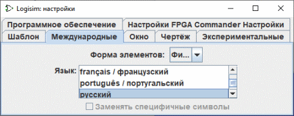

Вкладка Интернациональные

Эта вкладка позволяет настроить Logisim в соответствии с региональными предпочтениями.
-
Форма элементов: Logisim поддерживает два стандарта для отрисовки логических элементов: IEC и ANSI элементы. В следующей таблице приведены различия.
ANSI IEC И 
ИЛИ Поскольку стиль с ANSI, как правило, более популярен в США, а IEC стиль более популярен в Европе, некоторые люди обозначают стили в соответствии с этими регионами.
Logisim не соответствует какому-либо стандарту в точности; он придерживается середины чтобы переключаться между ними. В частности, фигурные элементы более квадратные, чем должны быть по размерам, установленным соответствующим стандартом IEEE. Ещё, хотя элементы Исключающее ИЛИ и Исключающее ИЛИ-НЕ должны быть той же ширины, что и элементы ИЛИ и ИЛИ-НЕ в прямоугольном стиле, они имеют разную ширину из-за сложностей при сжатии фигурного элемента Исключающее ИЛИ.
-
Язык: Переключение с одного языка на другой. Текущая версия переведена на английский, испанский, русский и немецкий языки, французский, итальянский, португальский, греческий.
- Немецкий перевод был представлен в Logisim 2.6.1. Его выполнил Uwe Zimmermann, преподаватель университета Уппсалы в Швеции.
- Греческий перевод был представлен в Logisim 2.7.0 . Его выполнил Tanos Kakarountas, преподаватель Технологического образовательного института Ионических островов в Греции.
- Португальский перевод был представлен в Logisim 2.6.2. Его выполнил Teldo Cruz Franqueira, преподаватель Папского Католического Университета Minas Geraisa в Бразилии.
- Русский перевод был представлен в Logisim 2.4.0. Его выполнил Илья Лилов из России.
- Испанский перевод был представлен в Logisim 2.1.0. , Его предоставил Pablo Lil Ramos из Испании.
- Французский перевод был частично введен с помощью Logisim 2.13.22. Продюсирован Roberto Rigamonti и завершен в 2.14.2 Marc-André Baillifard Лозаннский университет
- Перевод Итальянский был представлен с логисимом 2.14.7.
- Перевод Голландский был представлен в версии Logisim 2.3.0.
В связи с изменениями не все переводы находятся на одном уровне, и еще многое предстоит перевести и исправить, свяжитесь со мной. Приглашаются переводы и документация Logisim! Если вам интересно, github.com/logisim-evolution/logisim-evolution. Это не будет обязательством: я буду рад услышать о вашем интересе, скажу, не знаю ли я кого-то, кто уже работает над ним, подготовлю вам версию для работы, и пришлю вам инструкции. Процесс перевода не требует понимания Java.
-
Заменять специфичные символы: некоторые платформы имеют плохую поддержку для символов (например ñ или ö), которых нет в 7-битном наборе символов ASCII. Когда это включено, Logisim будет заменять все вхождения таких символов соответствующими эквивалентными символами из 7-битного набора символов ASCII. Флажок отключен, если текущий язык не имеет доступных эквивалентов (например, английский).